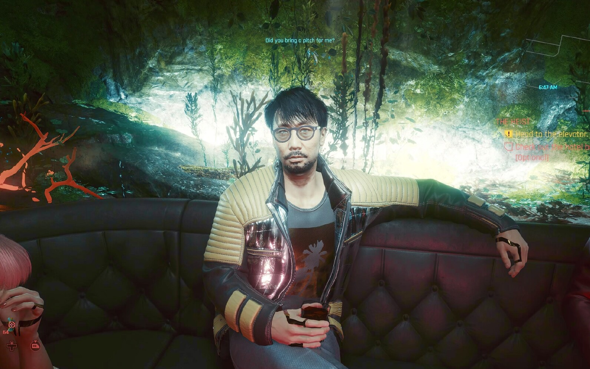

Cyberpunk 2077 - Hideo Kojima w hotelu
W jednej z misji fabularnych spotykasz postać Hideo Kojimy - legendarnego twórcy serii Metal Gear Solid.
- Podczas misji "The Heist" trafiasz do hotelu Konpeki Plaza
- Zanim pójdziesz do windy, wejdź do baru po prawej stronie
- Przy jednym ze stolików siedzi mężczyzna w garniturze i okularach przeciwsłonecznych - to właśnie Hideo Kojima, podpisany jako Oshima
- Gdy podejdziesz usłyszysz jak rozmawia o sztuce i projektowaniu gier
UWAGA! To jednorazowy moment - jeśli go przegapisz, nie pojawi się ponownie!
